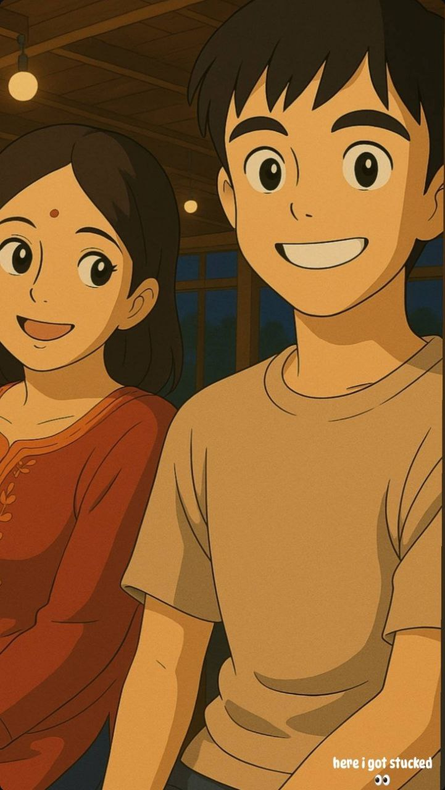

My Agrika,

Pta h... jb se tum meri life mein aayi ho na, sb kuch kisi movie ke dream sequence jaisa lagta h 🎬 Tumhra naam sunte hi smile aa jaati h... aur tumhe dekhke lagta h, “bas yhi toh meri duniya h.”
Tumri baatein uff, kabhi mishti doi jaisi sweet, toh kabhi mirchi jaisi spicy 🌶️ Aur tumhra gussa? Arre, usmein bhi cuteness overload hoti h.
Main promise karta hoon zindagi ke har scene mein, har climax pe, main hamesha tumhri side hero hi rahunga Tu royegi toh main chupa lunga... tu hansi toh main bhi has jaunga 😁
Kabhi kabhi sochta hoon, tum kaise itni perfect ho sakti ho Mtlb... Khuda ne tujhe mere liye banaya hoga, bina interval ke direct "The End" tak hum dono ke liye 💍✨
Tumhre saath har pal kisi scene ka best take lgta h… no retakes needed. Tum bs saath rehna baaki kahaani main likhta jaaunga, sirf tumhre liye ✍️❤️
Har baar tumhe choose karunga bina soch samajhe, lifetime. Always you. Always us. 💗
– Yours Batman 💫